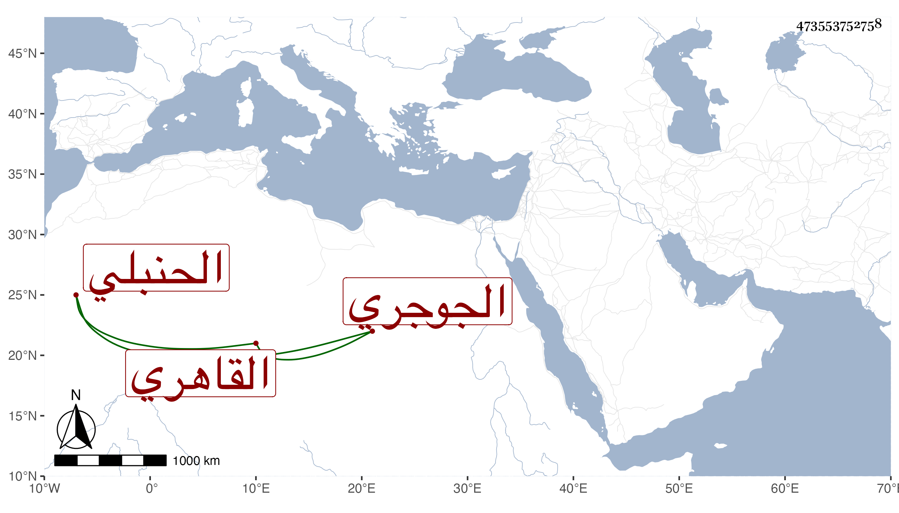

0902Sakhawi.DawLamic.ITO20230111-ara1.EIS1600.473553752758
Biography ID: 473553752758
1052
محمد بن أحمد بن عبد العزيز بن محمد بن عبد الرحمن بن أبي بكر العز ابن الشهاب الجوجري الأصل القاهري الحنبلي سبط العز الحنبلي والماضي أبوه المعروف بأخي ابن هشام لأمه . ولد واستقر في جملة من جهات جده كتدريس الصالح ولم يجتهد أهله في إقرائه مع تردد غير واحد من الفقهاء له بحيث لم يتكامل له حفظ القرآن وربما قرأ عند القاضي البدر السعدي وحضر دروسه وزوجه ابنته فما أظنه أزال بكارتها وكانت محاربات حتى فارقها بعد سنتين وتزوج بابنة للشمس الفرنوي من أمة وحج مع أبويه وجاور سنة ورجع في أول سنة أربع وتسعين فجلس مع الشهود عند الصالحية ، وله فهم وتمهر .
